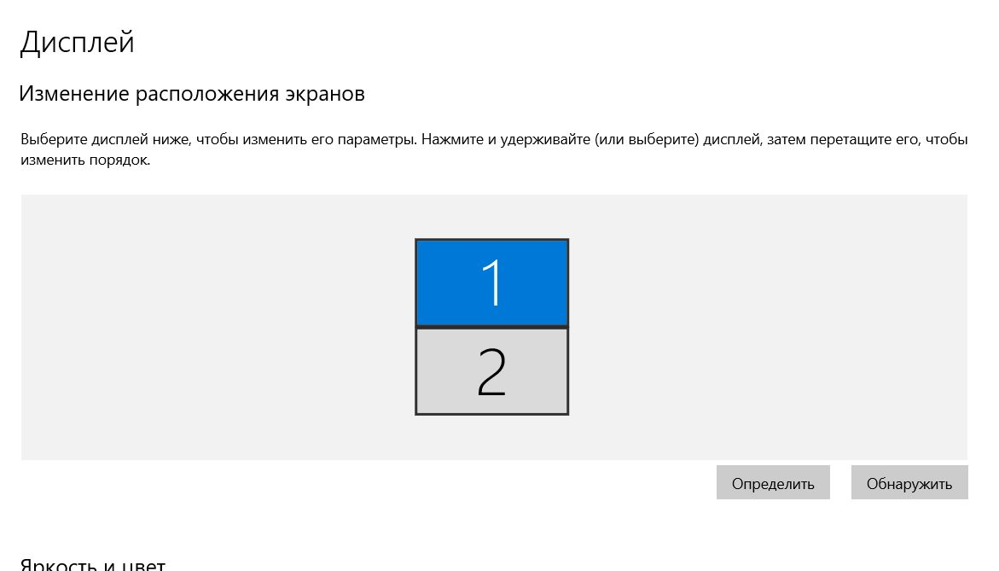
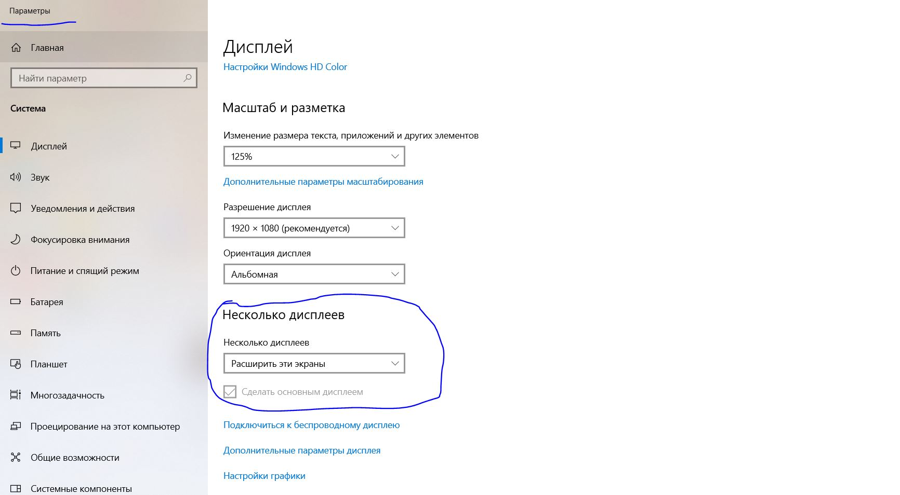
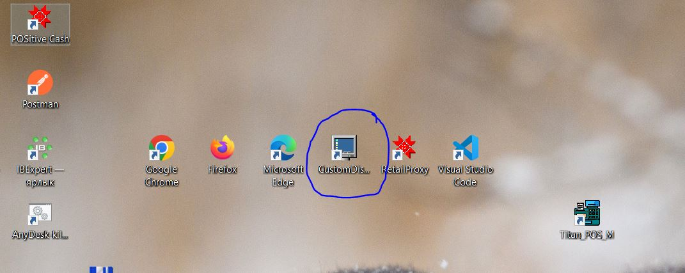
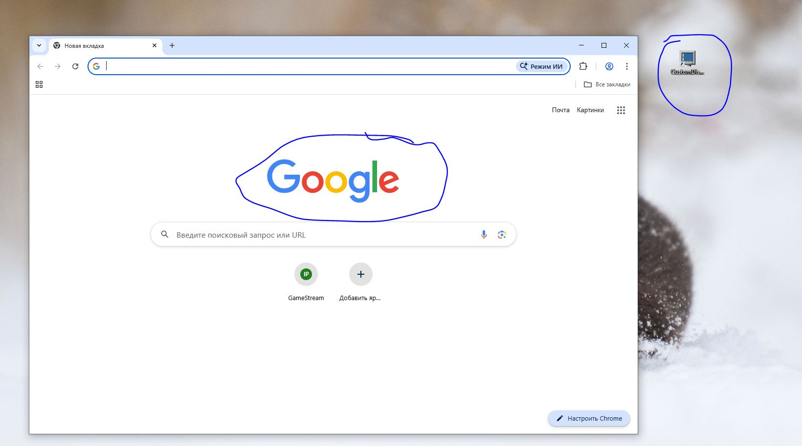

Настройка второго монитора, подключенного к одному и тому же компьютеру (кассе)
Вначале должны подключить в Windows второй монитор, через Панель управления, Настройка Дисплея


После устьановки второго дисплея:
Откройте браузер, который вы будете использовать как основной браузер для монитора покупателя, например, Google Chrome.
Открывшееся окно браузера с помощью мыши перетащите на второй монитор. Таким образом чтобы оно уже отображалось на втором мониторе.
После запуска АРМ Кассира на рабочем столе (основного монитора) создается ярлык CustomDisplay
Запуск браузера с монитором на экране отрабатывает по данному ярлыку, в котором автоматически создаются настройки http сайта.

Таким образом, если вы откроете браузер, он должен будет открыт на втором мониторе
и у вас на втором мониторе должно быть следующее...

Теперь можно запустить АРМ кассира в Гедымин и проверять настройки.